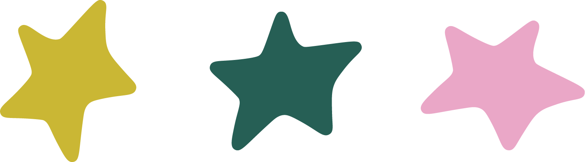
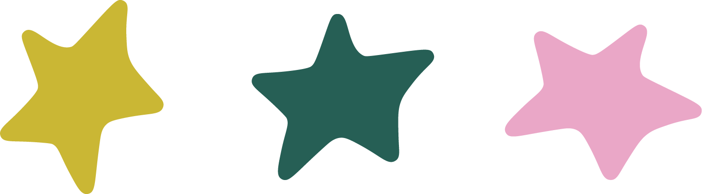

Each project I involve myself with comes from a place of passion. I am drawn to spirited people and find peace in cultivating art fueled by their dedication to a cause.
SINCE. 2003

Each project I involve myself with comes from a place of passion. I am drawn to spirited people and find peace in cultivating art fueled by their dedication to a cause.
As a designer with a passion for the outdoors, I focus a lot of my work on promoting practices that make for a healthier planet. This project allowed me to be more playful with my art while experimenting with the style of messaging I chose to use. It gave me the freedom to share my ideas in a way I felt emboldened.
Power of Education is a non profit organization committed to provide support, guidance, and financial backing to select children in underpriveleged communities. Their values of community, excellence, and education were my focal points throughout the logo design process.
As I shifted to designing and coding the website, I reiterated their values while focusing on the user experience by structuring the layout to guide users intuitively. Bold colors, strong callouts and deliberate image placement remind viewers of the nonprofit's message of making change in the lives of children. Every design decision was made to create something functional, intentional, and imactful.
This design project, in which I chose to redesign OLLY Gummies' packaging, encouraged creative typography and out-of-the box imagery, keeping in mind the messages they share and the audiences they reach. This school project allowed students to be experimental with color, design and typography while working with a unique packaging shape.
My choice of the rounded text, soft monochromatic colors, and the unique wavy cloud pattern that circles this package design are all features that reinforce buyers of OLLY's product: melatonin (sleep) gummies. A unique cutout on the side of the box following the shape of the clouds adds another visually alluring detail. The overall design of this package provides a sense of uniqueness and draw that nudges consumers to buy OLLY products.